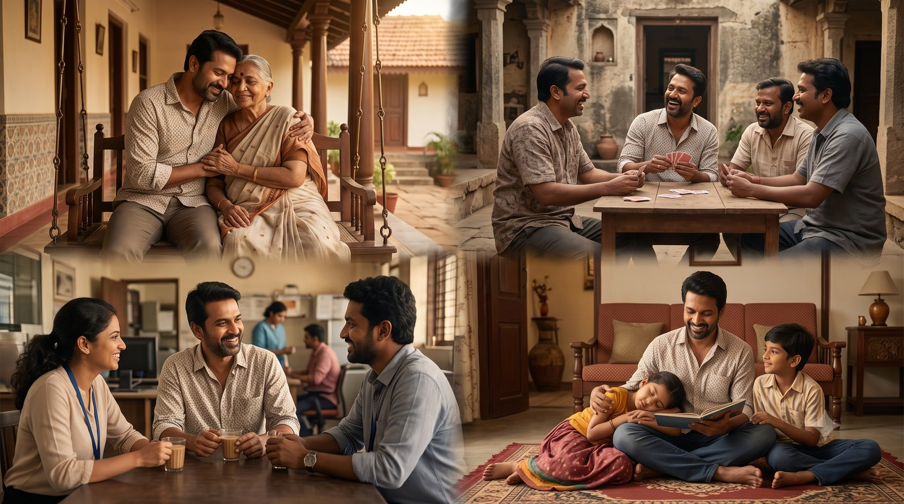
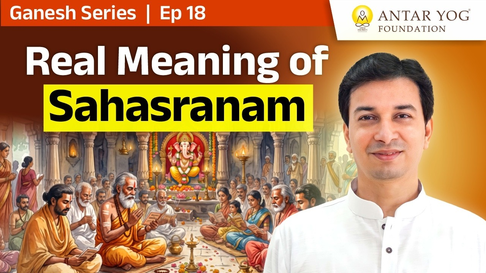

हज़ार बार एक ही बात क्यों दोहराएँ?
गणपति अथर्वशीर्ष का पाठ करने वाले ज़्यादातर लोग सीधे उसकी फलश्रुति (पाठ के फल का वर्णन) पर पहुँच जाते हैं। वहाँ लिखा है: हज़ार बार पढ़ो।
पर मन पूछता है, एक ही बात हज़ार बार क्यों? उसका फल क्या है? बच्चों से हम "कच्चा पापड़, पक्का पापड़" बुलवाते हैं, वह तो खेल है। यहाँ इतना दोहराना किसलिए?
और फिर सहस्रनाम (हज़ार नामों का स्तोत्र) की बात आती है: गणेश सहस्रनाम, विष्णु सहस्रनाम, देवी सहस्रनाम। एक ही ईश्वर के हज़ार नाम लेना क्यों?
आचार्य जी कहते हैं कि किसी काल्पनिक चीज़ को हज़ार बार बोलने का कोई फ़ायदा नहीं है, अगर वह असल जीवन में दिखती ही नहीं।
आपके भी तो कितने नाम हैं
ज़रा अपने बारे में सोचिए। एक नाम जन्म प्रमाणपत्र पर है। माँ घर में किसी और नाम से बुलाती है, पिंटू या पिंकी जैसा। दोस्तों का अपना नाम है। ऑफ़िस में कोई कुलनाम से पुकारता है।
कोई "डॉक्टर साहब" कहता है, कोई "भारतीय"। कोई आपको दुबला, गंजा या चश्मे वाला कहकर पहचानता है। किसी के आप भाई हैं, किसी के पति, किसी के बेटे, किसी के पिता।
पर क्या ये अलग-अलग व्यक्ति हैं? नहीं। नाम अनेक, व्यक्ति एक। फिर भी आपके हज़ार नाम नहीं बन पाते।
आज आपको कितने लोगों ने कितने अलग नामों से पुकारा? क्या उनमें से किसी नाम ने आपको "दूसरा" व्यक्ति बना दिया?

वासुदेवः सर्वम्: सब कुछ वही है
सहस्रनाम का असली अर्थ भगवद्गीता के इस श्लोक में छिपा है:
बहूनां जन्मनामन्ते ज्ञानवान्मां प्रपद्यते।
वासुदेवः सर्वमिति स महात्मा सुदुर्लभः॥
"अनेक जन्मों के बाद, उस अंतिम जन्म में जिसमें मोक्ष होना है, ज्ञानी मेरी शरण लेता है। किस समझ के साथ? 'वासुदेवः सर्वम्', यानी सब कुछ परमात्मा है (All is God)। ऐसा व्यक्ति महात्मा है, और ऐसा महात्मा बहुत दुर्लभ है।"
(श्रीमद्भगवद्गीता ७.१९)
जो विष्णु का उपासक है, उसे हर व्यक्ति में विष्णु दिखने चाहिए। जो देवी का उपासक है, उसे हर जगह देवी दिखनी चाहिए।
सहस्रनाम में संसार का ही वर्णन है
कोई भी सहस्रनाम खोलकर देखिए। गणपति के नामों में है: तू विघ्नकर्ता है, तू विघ्नहर्ता है। देवी के सहस्रनाम में भी लगभग वही नाम मिलेंगे। तू गुरु है, तू श्रम करने वाला है, तू पालनकर्ता है, तू संहारकर्ता है, तू ही सृष्टि करने वाला है।
ये सब काम करते हुए लोग क्या हमें रोज़ नहीं दिखते? गुरु, श्रमिक, पालने वाले, बनाने वाले। उन्हें देखकर ब्रह्म (परम सत्य) का स्मरण होना चाहिए: "अरे, यही तो मुझे सब जगह देखना था।"
यही भाव जगाने के लिए सहस्रनाम पढ़ा जाता है। अगर जीवन में वह दिखता ही नहीं, तो हज़ार बार बोलने से कुछ नहीं होगा।
ॐ तत्सत्: दान में गाय नहीं, परमात्मा दिखे
श्रीकृष्ण ने कहा कि दान "ॐ तत्सत्" की भावना से देना है।
ॐ तत्सदिति निर्देशो ब्रह्मणस्त्रिविधः स्मृतः।
(श्रीमद्भगवद्गीता १७.२३)
ॐ यानी वही परमात्मा। मैंने गाय को चारा खिलाया। कृष्ण कहते हैं, गलत किया। गाय को देना गलत नहीं था, पर मन में "गाय" शब्द आया कैसे? वहाँ ॐ आना चाहिए था, यानी गाय के रूप में परमात्मा।
मैंने भिखारी को खाना खिलाया। फिर गलत। भिखारी क्यों दिखा, शनिदेव क्यों नहीं? और अगर शनिदेव को प्रेम से अन्न दिया, पर इसलिए कि मुझे पुत्र मिले, तो वह भी गलत। मेरे लिए कुछ नहीं। निष्काम भाव (बिना किसी स्वार्थ के) से उसका पेट भरना है।
जब आप किसी की मदद करते हैं, तो आपको सामने कौन दिखता है: एक ज़रूरतमंद, या परमात्मा?
दूसरा यहाँ कोई है ही नहीं
फिर प्रश्न आता है: मैं दूसरों की मदद क्यों करूँ? क्या सिर्फ़ इसलिए कि निष्काम सेवा में समय अच्छा बीतता है?
उत्तर है: दूसरा यहाँ कोई है ही नहीं। न दूसरा, न तीसरा। यही अद्वैत भावना (non-duality) है।
यह तब आती है जब समझ में आता है कि यह सब मेरी ही कल्पना थी, मैं ही था। यही कैवल्य पद है: केवलोऽहम्, मैं अकेला ही हूँ। जैसे नींद से जागकर पता चलता है कि सपना मेरा ही था।
आपका शरीर कभी बिल नहीं भेजता
जब तक मुझे अपना शरीर एक अखंड इकाई लगता है, उसमें व्यापारी भाव नहीं आता। हाथ नाक खुजलाता है, कान खुजलाता है, पर कोई कीमत नहीं माँगता।
वह यह नहीं कहता कि यहाँ मेरे नाम की तख़्ती लगाओ, या "आज मुफ़्त में कर रहा हूँ, पर याद रखना, तुझे भी मेरी सेवा करनी पड़ेगी, वरना अगली बार नहीं करूँगा।"
हाथ, नाक, आँख, बाल सब अलग हैं। फिर भी एक साझा भाव सबको जोड़ता है: मेरा हाथ, मेरा कान, मेरी नाक।
आचार्य जी बताते हैं कि "मेरा" का यही साझा भाव इन्हें बाँधता है। जिस दिन पूरा विश्व आपको अपने शरीर जैसा "मेरा" लगने लगे, समझिए साक्षात्कार (आत्म-अनुभूति) का समय आ गया।
कहानी के रचयिता आप ही हैं
सृष्टि है तो निराकार (रूप से परे), पर हमें साकार (रूपों में) दिखती है। इसलिए सहस्रनाम में अनगिनत रूपों को एक ही नाम से जोड़ा जाता है।
दृश्य से असहमति हो सकती है, द्रष्टा से नहीं (Hate the scene, not the seer)। इसमें वैर भाव (शत्रुता) नहीं होता। आपकी कहानी में जो खलनायक आया, उसकी पटकथा आपने ही लिखी थी और उसे लाए भी आप ही थे।
आचार्य जी कहते हैं कि जब तक हम साक्षी भाव से नहीं देखेंगे, तब तक भगवान दिखाई नहीं देंगे।
मुख्य बातें
- सहस्रनाम का उद्देश्य हज़ार बार रटना नहीं, बल्कि हर रूप में एक ही परमात्मा को पहचानना है।
- जैसे आपके अनेक नाम होकर भी आप एक हैं, वैसे ही ईश्वर के हज़ार नाम एक ही सत्य के हैं।
- गीता ७.१९: "वासुदेवः सर्वम्", सब कुछ परमात्मा है, यह समझने वाला दुर्लभ महात्मा है।
- दान "ॐ तत्सत्" के भाव से और निष्काम होकर दें: सामने गाय या भिखारी नहीं, परमात्मा दिखे।
- सेवा इसलिए, क्योंकि दूसरा कोई है ही नहीं: यही अद्वैत और कैवल्य है।
- शरीर के अंग एक-दूसरे से हिसाब नहीं माँगते; पूरे विश्व के प्रति ऐसा भाव आए, तो साक्षात्कार निकट है।
- साक्षी भाव से देखे बिना भगवान नहीं दिखते।
